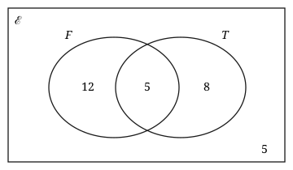
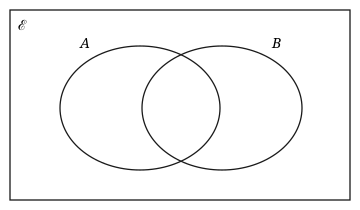

<script src="/assets/redirect.js"></script>
<section class="theory" data-section="IGCSE-24.3">
<h2>24.3 Calculating probability from Venn diagrams</h2>
<p class="src">Based on Cambridge IGCSE Mathematics Core and Extended Coursebook (Karen Morrison and Nick Hamshaw), Chapter 24 Probability using tree diagrams and Venn diagrams, printed pp.837–842. Own wording and new numbers, following the coursebook use of Venn diagrams, set notation and the number of elements in each region to find probabilities.</p>
<p class="key-words"><strong>Key words:</strong> <em>Venn diagram</em>, <em>universal set</em>, <em>intersection</em>, <em>union</em>, <em>complement</em></p>
<h3>Venn diagrams and set notation</h3>
<p>A <strong>Venn diagram</strong> shows sets as circles inside a rectangle, the <strong>universal set</strong> \(\mathscr{E}\). The number written in each region is the number of elements in that region.</p>
<ul><li>\(A\cap B\), the <strong>intersection</strong>: elements in both \(A\) and \(B\).</li><li>\(A\cup B\), the <strong>union</strong>: elements in \(A\) or \(B\) or both.</li><li>\(A'\), the <strong>complement</strong> of \(A\): elements not in \(A\).</li><li>\(\mathrm{n}(A)\): the number of elements in \(A\).</li></ul>
<h3>Filling in a Venn diagram</h3>
<p>Start with the intersection, then work outwards. If \(\mathrm{n}(A)\), \(\mathrm{n}(B)\) and \(\mathrm{n}(A\cup B)\) are known, then \(\mathrm{n}(A\cap B)=\mathrm{n}(A)+\mathrm{n}(B)-\mathrm{n}(A\cup B)\), because the elements in both sets are counted twice.</p>
<h3>Probability from a Venn diagram</h3>
<p>If an element is chosen at random from \(\mathscr{E}\), then</p>
<p>\[P(\text{region})=\dfrac{\text{number of elements in the region}}{\mathrm{n}(\mathscr{E})}.\]</p>
<div class="worked-example">
<h4>Worked example 1: Reading a Venn diagram</h4>
<p class="src">Coursebook, 24.3, probabilities from a Venn diagram. New numbers.</p>
<p></p><p>The Venn diagram shows the numbers of students in a class who play football \((F)\) and tennis \((T)\). A student is chosen at random. Find (a) \(P(F\cap T)\), (b) \(P(F\cup T)'\).</p>
<ol class="steps">
<li>\(\mathrm{n}(\mathscr{E})=12+5+8+5=30\) <span class="mark">B1</span></li>
<li>(a) \(\dfrac{5}{30}=\dfrac{1}{6}\) <span class="mark">B1</span></li>
<li>(b) \(\dfrac{5}{30}=\dfrac{1}{6}\) <span class="mark">B1</span></li>
</ol>
<p class="final"><strong>Answer:</strong> (a) \(\dfrac{1}{6}\); (b) \(\dfrac{1}{6}\)</p>
</div>
<div class="worked-example">
<h4>Worked example 2: Completing a Venn diagram</h4>
<p class="src">Coursebook, 24.3, filling in the regions. New numbers.</p>
<p>In a group of 40 people, 25 like tea, 18 like coffee and 4 like neither. Find the probability that a person chosen at random likes both.</p>
<ol class="steps">
<li>\(\mathrm{n}(T\cup C)=40-4=36\) <span class="mark">M1</span></li>
<li>\(\mathrm{n}(T\cap C)=25+18-36=7\) <span class="mark">A1</span></li>
<li>\(P=\dfrac{7}{40}\) <span class="mark">B1</span></li>
</ol>
<p class="final"><strong>Answer:</strong> \(\dfrac{7}{40}\)</p>
</div>
<h3>Common mistakes</h3>
<ul><li>Writing \(\mathrm{n}(A)\) in the 'A only' region, so that the intersection is counted twice.</li><li>Forgetting the elements outside all the circles when finding \(\mathrm{n}(\mathscr{E})\).</li><li>Mixing up \(A\cap B\) (both) and \(A\cup B\) (either or both).</li></ul>
<h3>Past paper</h3>
<p class="src">0580/21/O/N/16 Q22, official QP and official MS.</p>
<p>(a) \(\mathrm{n}(\mathscr{E})=10\), \(\mathrm{n}(A)=7\), \(\mathrm{n}(B)=6\), \(\mathrm{n}(A\cup B)'=1\).</p><p></p><p>(i) Complete the Venn diagram by writing the number of elements in each subset. [2]</p><p>(ii) An element of \(\mathscr{E}\) is chosen at random.</p><p>Find the probability that this element is an element of \(A'\cap B\). [1]</p><p>(b) On the Venn diagram below, shade the region \(C'\cap D'\). [1]</p><p></p>
<details><summary>Mark scheme</summary>
<ol class="steps">
<li>(a)(i) \(\mathrm{n}(A\cap B)=4\) <span class="mark">B1</span> Official MS: 2 marks for the completed diagram 3, 4, 2, 1; B1 for n(A ∩ B) = 4.</li>
<li>(a)(i) \(A\) only 3, \(B\) only 2, outside 1 <span class="mark">B1</span> Official MS: completed Venn diagram 3, 4, 2, 1 for both marks.</li>
<li>(a)(ii) \(\dfrac{2}{10}\) <span class="mark">B1</span> Official MS: 2/10 oe, 1FT; allow correct answer or FT their 2 / 10.</li>
<li>(b) The region outside both \(C\) and \(D\) shaded <span class="mark">B1</span> Official MS: 1; diagram with only the region outside both circles shaded.</li>
</ol>
</details>
<p>The other Venn diagram past papers for this unit choose from a subset of the people, so they are in 24.4.</p>
<div class="quick-check">
<h4>Quick check 1</h4>
<p>\(\mathrm{n}(\mathscr{E})=10\), \(\mathrm{n}(A)=7\), \(\mathrm{n}(B)=6\) and \(\mathrm{n}(A\cup B)'=1\). Find \(\mathrm{n}(A\cap B)\).</p>
<details><summary>Worked solution</summary>
<ol class="steps"><li>\(\mathrm{n}(A\cup B)=9\)</li><li>\(7+6-9\)</li></ol>
<p class="final"><strong>Answer:</strong> \(4\)</p>
</details>
</div>
<div class="quick-check">
<h4>Quick check 2</h4>
<p>A Venn diagram has 3 elements in \(A\) only, 4 in \(A\cap B\), 2 in \(B\) only and 1 outside. Find \(P(A'\cap B)\).</p>
<details><summary>Worked solution</summary>
<ol class="steps"><li>\(\mathrm{n}(\mathscr{E})=10\)</li><li>\(\dfrac{2}{10}\)</li></ol>
<p class="final"><strong>Answer:</strong> \(0.2\)</p>
</details>
</div>
<div class="quick-check">
<h4>Quick check 3</h4>
<p>A Venn diagram has 12 elements in \(A\) only, 5 in \(A\cap B\), 8 in \(B\) only and 5 outside. Find \(P(A\cup B)\).</p>
<details><summary>Worked solution</summary>
<ol class="steps"><li>\(\mathrm{n}(A\cup B)=25\), \(\mathrm{n}(\mathscr{E})=30\)</li><li>\(\dfrac{25}{30}\)</li></ol>
<p class="final"><strong>Answer:</strong> \(\dfrac{5}{6}\)</p>
</details>
</div>
</section>
